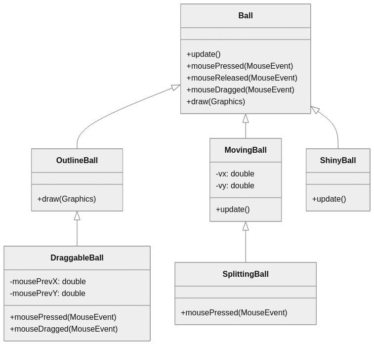
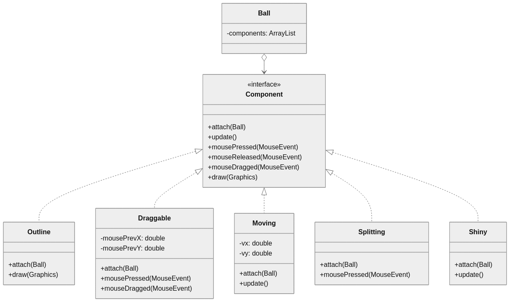

Project 5: Refactoring
For this project, you'll be improving the structure of an existing program and then making a few changes that take advantage of the new and improved code.
Tasks
Task 1: Refactor
Download and run the following program:
Clicking on the buttons should create balls with various properties. Some of them will respond to mouse input (draggable, moving, splitting), and some of them will act on their own (moving, shiny, splitting).
This program works, but the inheritance hierarchy used for the different types of balls is not very flexible. Your job is to replace this with a more versatile design using composition and an interface.
The current design is summarized by the following class diagram:

Note the use of inheritance to create different types of balls. The problem with
this design is that we cannot easily combine properties from different branches
of that hierarchy. For example, what if we wanted a shiny ball with an outline
that also moved and split when clicked? We can't inherit from ShinyBall,
OutlineBall, and SplittingBall at the same time, so we would have to copy a
lot of the code to create our new class. As a good software engineer, you
dislike code duplication and would rather not do this.
Our solution is to stop using inheritance altogether. Here is our new design:

In this design, the Ball class has a list of components that can modify its
behavior. These components implement the vaguely-named Component interface,
which declares a set of methods used to interact with the ball. Each of the
Ball subclasses from the previous design now implement the Component
interface instead of extending the Ball class.
The advantage of this new design is that we can mix and match components without the restrictions imposed on us by the old inheritance design. We can still create all the same types of balls we had before, but now we can create new variations without even writing a new class:
// Creating a shiny ball with the old design:
scene.getActions().addToScene(new ShinyBall(scene.getActions()))
// Creating a shiny ball with the new design:
scene.getActions().addToScene(new Ball(scene.getActions(), new Shiny()))
// Creating a shiny, outlined, moving, and splitting ball with the old design:
// oops, can't do that!
// Creating a shiny, outlined, moving, and splitting ball with the new design:
scene.getActions().addToScene(new Ball(scene.getActions(), new Shiny(),
new Outline(), new Moving(), new Splitting()))
Now that you're sold on the new design, it's time to make it! I've provided the
updated Ball class and its Component interface below, but you need to
convert each of the Ball subclasses (ShinyBall, MovingBall, etc.) into
their component counterparts (Shiny, Moving, etc.). You'll also need to
update the buttons in your Main class to properly create their ball variants
using the new system. It's a minor change, and the previous example for a shiny
ball should help you.
When you're finished with this task, the program should work exactly as it did
before. That may not be a very satisfying milestone, so try making a button that
spawns a new ball variant, like the shiny-outline-moving-splitting ball. Some
combinations may not work well together (such as Draggable and Moving), but you
can now create many variations that didn't previously exist without adding more
Ball subclasses or new components.
Note: your code must work with the original Scene.java, the new
Component.java, and the new Ball.java. Do not modify these files during your
update. You should only have to make minor changes to Main.java to update the
buttons, and more substantial changes to DraggableBall.java,
MovingBall.java, OutlineBall.java, ShinyBall.java, and
SplittingBall.java (including renaming them) to convert them into components.
Task 2: New Component
Create a new component that affects the behavior of a ball in some way. For example, you could make the ball:
- gradually shrink, then remove itself from the scene when the radius reaches zero
- move in a circular pattern
- change color when clicked
Once you've made your new component, add two new buttons to the program. These buttons must spawn balls with your component and at least one other component.
Task 3: Reflection
This assignment is not meant to teach you that inheritance is bad. However, it does demonstrate a limitation of inheritance and how composition with interfaces can produce more flexible code. Inheritance and composition are tools; they are good at solving some problems and bad at solving other problems. You will rarely find yourself in a situation where one option is clearly superior to the other in every way. You must instead think about the trade-offs of each option and how they apply to the code you are writing.
Can you think of any downsides to the new composition-based approach you coded in the first task? This assignment was designed to highlight some advantages of composition and some disadvantages or inheritance, but that doesn't mean there's no advantage to choosing the inheritance design in this program.
If you're done with the program (tasks 1 and 2), then you can submit your code on Blackboard. Make sure you include all of the source files listed in the deliverables section. There's no writeup to complete this time, but I still want you to think about what you've (hopefully) learned from this exercise. To be clear: you do not need to submit a reflection or writeup file with your project for it to count as complete; I only need your code. However, if you do feel like writing and want some feedback from me, then you can include a write-up answering some or all of the following questions:
- What advantage do you think the old inheritance design had over the new composition design? I bet you can think of at least one that isn't "the composition version required more code."
- What's a piece of code you wrote for this assignment that you think is particularly good or bad, and why do you think this?
- Do you have any other questions or comments about the assignment or the work you submitted?
Deliverables
- Your
Main.java,Draggable.java,Moving.java,Outline.java,Shiny.java, andSplitting.javafiles - The .java file for your new ball component
- Any written material you created for task 3
Submission
Before submitting this assignment, make sure you understand and abide by the Academic Integrity policy in our syllabus. This is particularly important if you received any assistance, made use of an LLM, or used resources that were not provided in class.